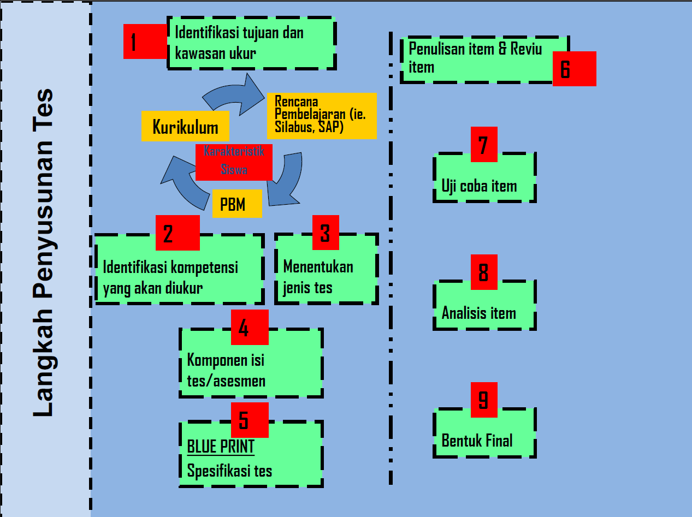

Tahap Penyusunan Tes Kognitif
Penyusunan Tes Kognitif
2026-08-12
Outline
- Urutan pengerjaan: menulis item lebih dulu atau menyusun rencana lebih dulu?
- 11 tahap, 4 fase penyusunan
- Fase Perencanaan: definisi konstrak dan blueprint
- Fase Pengembangan Item
- Fase Uji Empiris
- Fase Finalisasi
- Sifat iteratif proses
- Aktivitas: menilai proses penyusunan tes
Urutan pengerjaan menulis item
Kelompok Anda baru saja mendapat tugas
Menyusun tes bakat numerik untuk calon peserta pelatihan kerja. Apa yang harus dilakukan pertama kali?
- Sebagian besar akan mulai dengan menulis soal hitungan, tanpa menyusun definisi konstruk atau blueprint terlebih dahulu.
- Dalam satu jam, biasanya sudah terkumpul sekitar 20 butir soal.
- Masalahnya baru terlihat saat butir-butir itu diuji cobakan: domain yang diwakili tidak jelas, proporsinya tidak seimbang, dan validitas isinya sulit dipertanggungjawabkan.
Konsekuensi dari urutan ini
Menulis item sering dianggap sebagai aktivitas yang terpenting, sedangkan definisi konstruk dan blueprint dianggap sebagai langkah administratif. Namun urutan ini menentukan apakah item yang ditulis memiliki dasar yang dapat dipertanggungjawabkan-.
Tidak ada satu resep baku
Banyak versi, satu logika
- Kline (1986) menyusun tahapannya sendiri. Azwar (2019) punya urutan yang sedikit berbeda. Downing (2006), dalam Handbook of Test Development, merinci dua belas langkah untuk pengujian berskala besar.
- Detailnya berbeda-beda, tapi logika besarnya sama: rencanakan dulu apa dan bagaimana yang mau diukur, kembangkan itemnya, uji secara empiris, baru finalisasi.
Yang kita pakai di mata kuliah ini
Kita memakai sintesis sebelas tahap yang dikelompokkan jadi empat fase besar. Ini bukan satu-satunya cara yang “benar” — tapi ini yang akan memandu proyek kelompok Anda dari Pertemuan 9 sampai 14.
1️⃣1️⃣ tahap, 4️⃣ fase
Peta besarnya
| Fase | Tahap | Terjadi di proyek Anda |
|---|---|---|
| A. Perencanaan | 1–4 | Pertemuan 9–10 |
| B. Pengembangan Item | 5–6 | Pertemuan 11 |
| C. Uji Empiris | 7–9 | Pertemuan 12–13 |
| D. Finalisasi | 10–11 | Pertemuan 14 |
Fase A: Perencanaan
Tahap 1–2: tujuan dan konstruk
- Identifikasi tujuan dan cakupan konstruk yang diukur — untuk apa tes ini dipakai, dan pada populasi seperti apa?
- Definisi konstruk — apa sebenarnya yang diukur, dirumuskan secara operasional berdasarkan teori.
Tahap yang sering terlewat
Banyak orang cenderung melompati Tahap 2 karena dianggap “sudah jelas”. Semua orang merasa tahu apa itu “kemampuan numerik”. Tetapi tanpa definisi operasional yang eksplisit, tidak ada dasar untuk memutuskan item mana yang termasuk dan mana yang tidak termasuk ke dalam tes. Ini konsep operasionalisasi yang sudah Anda kenal dari Psikometri.
Tahap 3–4: jenis tes dan blueprint
- Menentukan jenis tes — apakah ini tes prestasi, potensi, atau inteligensi? (Pertemuan 1 relevan lagi di sini.)
- Menyusun spesifikasi tes/blueprint — proporsi item untuk tiap sub-domain, dan berapa jumlah itemnya.
Contoh sederhana blueprint
Tes bakat numerik dengan 3 sub-domain, 20 item:
| Sub-domain | Proporsi | Jumlah item |
|---|---|---|
| Operasi hitung dasar | 40% | 8 |
| Deret angka/pola | 30% | 6 |
| Soal cerita kuantitatif | 30% | 6 |
Blueprint juga biasanya menyilangkan domain isi dengan level kognitif yang ingin diukur — ini yang akan kita bahas lebih lengkap di Pertemuan 3 lewat taksonomi tujuan instruksional.
Fase B: Pengembangan Item
Tahap 5–6: menulis dan menelaah
- Penulisan item — sesuai proporsi dan level kognitif yang sudah ditetapkan di blueprint, bukan berdasarkan preferensi pribadi penulis item.
- Telaah/review ahli — item diperiksa oleh pihak lain (idealnya yang paham konstruknya) sebelum diuji cobakan, sebagai bukti awal validitas isi.
Fungsi tahap telaah
Penulis item sering tidak menyadari masalah pada item yang ditulisnya sendiri, misalnya kalimat yang ambigu, kunci jawaban ganda, atau petunjuk yang bias secara budaya. Telaah oleh pihak lain menjadi pemeriksaan pertama sebelum item digunakan pada partisipan sesungguhnya.
Fase C: Uji Empiris
Tahap 7–9: dari data ke bukti
- Uji coba (try-out) — item diberikan pada sampel yang representatif terhadap populasi sasaran.
- Analisis butir — memeriksa tingkat kesulitan dan daya beda tiap item dari data uji coba.
- Estimasi reliabilitas dan validitas — dihitung dari hasil analisis butir dan item yang dipertahankan.
Fungsi tahap ini
Tiga tahap ini adalah bagian proses di mana kualitas tes diuji berdasarkan data, bukan hanya penilaian ahli. Bagian ini dibahas lebih lanjut di Pertemuan 12–13.
Fase D: Finalisasi
Tahap 10–11: norma dan manual
- Penyusunan norma — mengubah skor mentah menjadi skor yang bisa dimaknai (persentil, skor standar) relatif terhadap kelompok acuan.
- Penyusunan manual tes — dokumentasi lengkap tentang cara mengadministrasikan, menyekor, dan menginterpretasikan tes.
Ini luaran Tugas 3 Anda
Booklet tes (berisi item yang lolos seleksi) dan manual tes yang Anda kumpulkan di Pertemuan 14 adalah Tahap 10 dan 11 ini.
Sifat iteratif proses
Pengulangan antar tahap
- Sebelas tahap ini digambarkan secara linear, tetapi dalam praktiknya sering melibatkan kembali ke tahap sebelumnya.
- Analisis butir menunjukkan item timpang di satu sub-domain → kembali ke Tahap 5 untuk menulis item pengganti, kadang kembali ke Tahap 4 untuk merevisi blueprint-nya.
- Reliabilitas ternyata terlalu rendah → bisa berarti kembali ke penulisan item, bukan sekadar menambah jumlah item.
Konsekuensi untuk jadwal proyek Anda
Alokasikan waktu untuk kemungkinan kembali ke tahap sebelumnya. Kelompok yang mengerjakan tiap tahap hanya satu kali tanpa peninjauan ulang cenderung mengalami kendala waktu di Pertemuan 13–14.
Ringkasan Tahapan Penyusunan Tes

Ringkasan
- Menulis item tanpa definisi konstrak dan blueprint terlebih dahulu adalah kesalahan umum yang berisiko menghasilkan proporsi domain yang tidak sesuai rencana.
- Ada banyak versi tahapan di literatur (Kline, 1986; Azwar, 2019; Downing, 2006)).
- Sebelas tahap mata kuliah ini terbagi jadi empat fase: Perencanaan, Pengembangan Item, Uji Empiris, Finalisasi.
- Prosesnya iteratif, alokasikan waktu untuk kembali ke tahap sebelumnya.
Untuk Pertemuan 3
Selanjutnya: taksonomi dan tujuan instruksional
Blueprint yang kita singgung hari ini menyilangkan domain isi dengan level kognitif. Pertemuan 3 membahas taksonomi yang jadi dasar penentuan level kognitif tersebut — alat yang akan Anda pakai langsung saat menyusun blueprint proyek Anda.
Ada pertanyaan❓

Catatan
- Paparan disusun dengan menggunakan dan Quarto dengan template dari UNAIR Theme.
- Kontak saya via amelia.zein@psikologi.unair.ac.id
Rujukan
Azwar, S. (2019). Konstruksi tes: Kemampuan kognitif. Pustaka Pelajar.
Downing, S. M. (2006). Twelve steps for effective test development. In S. M. Downing & T. M. Haladyna (Eds.), Handbook of test development. Lawrence Erlbaum Associates.
Kline, P. (1986). A handbook of test construction: Introduction to psychometric design. Methuen.